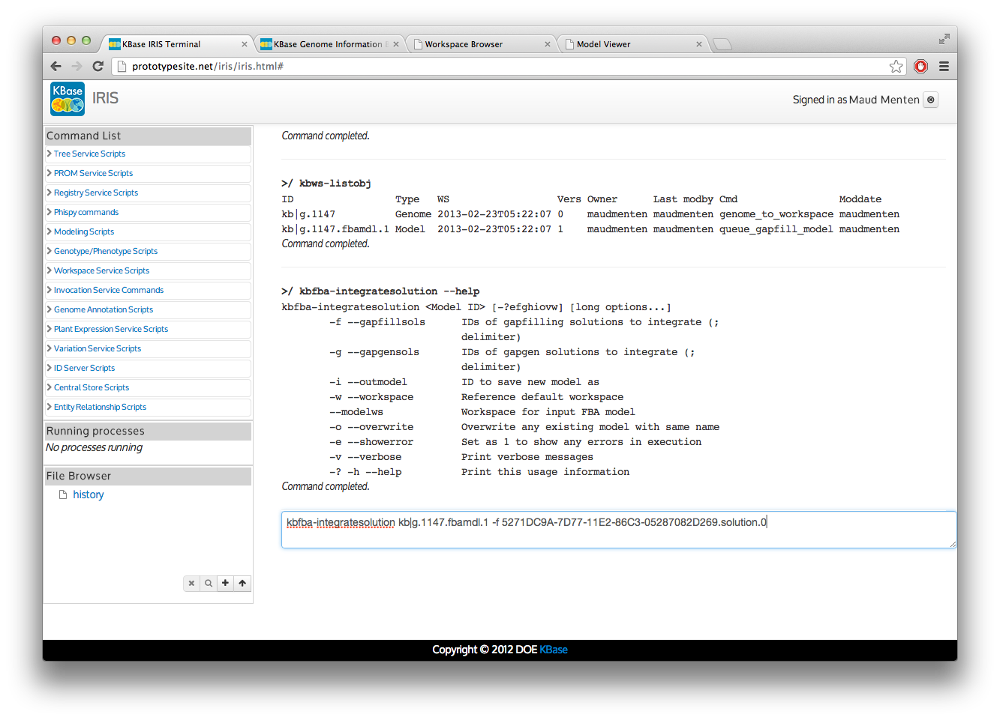

I can also share this workspace with individual users from the Workspace Browser.
I can also share this workspace with individual users from the Workspace Browser.
Prerequisites: IRIS, Genome Annotation Tutorial, Workspaces Tutorial
 To save your work and your share results, all input and output data objects will be saved to your workspace. Please refer to the Workspace Tutorial for more detailed instructions on how to effectively use the workspaces. In addition to the command-line scripts for accessing the workspaces, there is also a web based graphical Workspace Browser that will be used in this tutorial.
To save your work and your share results, all input and output data objects will be saved to your workspace. Please refer to the Workspace Tutorial for more detailed instructions on how to effectively use the workspaces. In addition to the command-line scripts for accessing the workspaces, there is also a web based graphical Workspace Browser that will be used in this tutorial.
Set up a workspace to store the input and output data objects. We will do this using the Workspace Browser. Open the Workspace Browser and sign in by clicking on the "Sign In" link in the upper right courner. You will see a list of workspaces available workspace on the left hand side. Since we want to create a new workspace, scroll to the bottom of this list and click on the "+create" link to create a new workspace for this FBA project. You must pick a workspace name and decide what permissions the public will have for this workspace. The public options are none, read or write. Below, I am creating a workspace name "pseudomonas" that will be publicly readable.
I can also share this workspace with individual users from the Workspace Browser.
Now, I can return to the IRIS command-line tool and select the workspace I just created, "pseudomonas" as my active workspace. First, I must login to the KBase system from IRIS.
From the IRIS command prompt, use the authenticate command to login. This will bring up a login window where you can enter your KBase username and password.
 Once logged in, I will set the "pseudomonas" workspace I created as my active workspace. This is done using the kbws-workspace command. By running the command with no argument, I will see my current workspace. By running it with "pseudomonas" as the argument, I will select "pseudomonas" as my workspace.
Once logged in, I will set the "pseudomonas" workspace I created as my active workspace. This is done using the kbws-workspace command. By running the command with no argument, I will see my current workspace. By running it with "pseudomonas" as the argument, I will select "pseudomonas" as my workspace.
 IRIS also contains several commands for the creation and manipulation of workspaces and data objects inside workspaces. a more detailed explaination of those tools can be found in the Workspace tutorial. The workspace commands we will use here are kbws-listobj to view the contents of our workspace and kbws-jobs to see our currently running jobs.
IRIS also contains several commands for the creation and manipulation of workspaces and data objects inside workspaces. a more detailed explaination of those tools can be found in the Workspace tutorial. The workspace commands we will use here are kbws-listobj to view the contents of our workspace and kbws-jobs to see our currently running jobs.
We must decide which genome we want to use to build a model. We can either select a genome that is already in our Central Data Store (CDS) or we can use a genome that we have annotated ourselves. In this tutorial, I will use the genome of Pseudomonas stutzeri A1501 from the CDS. If you want to use a genome not in the CDS, or alter the annotation of a KBase genome, please refer to the Genome Annotation Tutorial which will guide you through the process of annotating a genome from an assembly fasta file.
To import a genome fromt the CDS into our workspace, we use the command kbfba-loadgenome. To use this command, we must give it a valid KBase genome id. The easiest way to find the KBase genome id is to use the Genome Browser. Since I know what genome I am looking for, I will type the name into the search box. As I type, the displayed set of genomes will change. I can click on the scientific name of the organism and bring up more information about the genome and make sure the annotation is up to date.

We will use the "kb|g.1147" KBase genome id. Now we can return to IRIS and load the genome into our workspace by using the kbfba-loadfbagenome command with "kb|g.1147" as it's argument. Since our workspace is still set to "pseudomonas," our genome object will be created here.
 You can use the kbws-listobj command to verify that the "kb|g.1147" genome object has been created in your workspace.
You can use the kbws-listobj command to verify that the "kb|g.1147" genome object has been created in your workspace.
Now that we have the genome object in our workspace, we can build a draft model using our genome object. The draft model is based only on the existing gene annotations in our genome model. It is relatively simple using the kbfba-buildmodel command with our genome as the argument:

Here, you may notice that the kbfba-buildmodel command has not completed. Although the IRIS command prompt has returned, and we can execute more commands. Our kbfba-buildmodel command is still running and can be seen on the left side of the IRIS screen, under the "Running processes" header. When the command completes, it will be removed from under the "Running processes" header and a "Command complete" message will be printed to the IRIS screen.
Once the command is completed, we can view our draft model. The easiest way to do this is to return to our Workspace Browser. Note: you may have to reload the page to refresh the workspace contents. We should now see that our genome object and model object are in our workspace.
 To view more information about the model, we can click on the model name to bring up a popup with additional metadata for our model object. To view the actual model data, click on the "View HTML" link in the popup. This will open a new page showing the model contents.
To view more information about the model, we can click on the model name to bring up a popup with additional metadata for our model object. To view the actual model data, click on the "View HTML" link in the popup. This will open a new page showing the model contents.
 In this view, we see several tabs with detailed information about the model. Since this is a draft model, the "Gapfilling" and "Gapgen" tabs are empty.
In this view, we see several tabs with detailed information about the model. Since this is a draft model, the "Gapfilling" and "Gapgen" tabs are empty.
It is also possible to view the model in the graphical metbolic map view, GLAMM. Please refer to the GLAMM tutorial for instructions.
Generally, the draft model created by kbfba-buildfbamodel won't grow. This is mainly due to gene annotations missing in the genome object. These annotation include key metabolic genes and transporter necessary for growth in a given media. The gap filling process compares the set of reactions in our model to a database of all known reactions and attempts to find a set of reactions that, when added to our model, allow it to grow. This set of reactions, refered to as the gapfilling solution, can then be integrated into our model, creating a new model capable of growth on the media we used for gapfilling.
The gap filling method implements a cost function associated with each reaction and transporter to help us find the solution with the minimum number of reactions and transporters added. This is because, without addional information about the genome annotation, experimental data or known biochemistry, the solution with the fewest additional reactions is more likely to be correct.
The proposed gap filling solutions are just possible solutions based on minimizing the cost function. It is necessary to examine the set of reactions in the solution to judge whether it is plausible that these reactions are found in the organism. In order to create the best model, it is necessary to gap fill on several medias that the organism is known to grow on. Here, we will start with gap filling on complete media.
We can gapfill our model using the kbfba-gapfill command with our model as the argument. There are several important options that this program can use. The most significant are those that deal with the methods run time. Because we cannot computationally examine all possible solutions, the method uses hueristics to explore solution space and returns the best (lowest cost) solution it has found in that time.
In this case, I am going to gapfill on complete media. In the interest of time, I will only ask for one solution and have the program only run for 10min. It is better to ask for more solutions and the let the program run for at least 1hr per solution.

Because this is a long running job. The system will return a "job id" so that you can monitor its status. The "job id" is the long string listed as the "Perm ref:"

You can monitor your job's status by using the workspace command kbws-jobs. You will see the "status" of your job change from "queued" to "running" and finally to "done." Because these are long running jobs, they are excuted on a KBase compute cluster. Depending on the load on the system it can take sometime for the job go from the queue to running. Once the job is running, it should run uninterrupted until completion. You may run several jobs simultaneously, they will be run as cluster nodes become available.

In the case of gap filling, the results are added to our model object. If you run kbws-listobj in your workspace, you will notice that no new files have been created. Again, we can use the Workspace Browser to view the results of our gapfilling.
From the Workspace Browser we can click on our model, in this case "kb|g.1147.fbamdl.1", and we will see a popup with the updated metadata for the model. Clicking on the "View HTML" will bring us to the model viewer page. Now the "Gapfilling" tab in our model viewer has been populated with the gap filling solution(s) we requested. In some rare cases, it is possible that the program wasn't able to find a solution in the given amount of time.

Here we see that a single solution has been returned. This solution adds 12 reactions to our initial model. This gap filling solution has not actually been integrated into the model. We can now examine the list of suggested changes and decide if we believe this solution is plausible. If we choose, we can update our model by integrating this solution, or we can return to the kbfba-gapfill command, change the parameters and find more solutions. In this case, I will accept this solution and integrate it into the model. To do this, I must note the solution id. The solution id is the composed of the "Gapfill simulation" field + "." + "solution" + "." and the "Solution" field: "5271DC9A-7D77-11E2-86C3-05287082D269.solution.0"
With our solution id, we can now return to IRIS and integrate that solution into the model. We will use the kbfba-integratesolution command giving it our model id and our solution id: 
To view our integrated model, we can return to the Workspace Browser, open our model and then use the "View HTML" link to get to the Model Viewer. Now when, we look under the "Gapfill" tab, we see that the solution we integrated has had it's status updated to "Integrated" and more reactions have been added to our model. It is important to note that no new genes have been added to our model, only reactions with no associated genes.

Now that we have a gapfilled model on complete media, we can use it in a flux balance analysis to verify that the model will grow and examine the fluxes. In this example, I will be doing this using complete media. Usually, you will want to gapfill your model using a minimal media to improve it before running the FBA.
To run the fba, we will return to IRIS and use the kbfba-runfba command giving it our model as the only argument. There are a number of options that you can explore to alter the fba performance or change the growth media. Again, the default media is Complete media.

Again, we will return to the Workspace Browser to view the FBA results. In our workspace, there is now a new file "kb|g.1147.fbamdl.1.fba.0". (It maybe necessary to refresh your Workspace Browser window.)
 If we click on this FBA, we will first get a popup of the FBA metadata and then again, click on the "View HTML" link.
If we click on this FBA, we will first get a popup of the FBA metadata and then again, click on the "View HTML" link.
 In this case, you can see that the model grows since it has a significant positive value for the "Objective value". Since we used the default settings, the objective function was for biomass production.
In this case, you can see that the model grows since it has a significant positive value for the "Objective value". Since we used the default settings, the objective function was for biomass production.
In the FBA viewer, there are tabs for "Overview", "Reaction Fluxes" and "Compound Fluxes". You can explore the contents of your FBA result by click on the tabs and searching for particular compounds or reactions of interest. It is also possible to view and compare multiple FBA results in the GLAMM viewer. Please refer to the GLAMM tutorial.